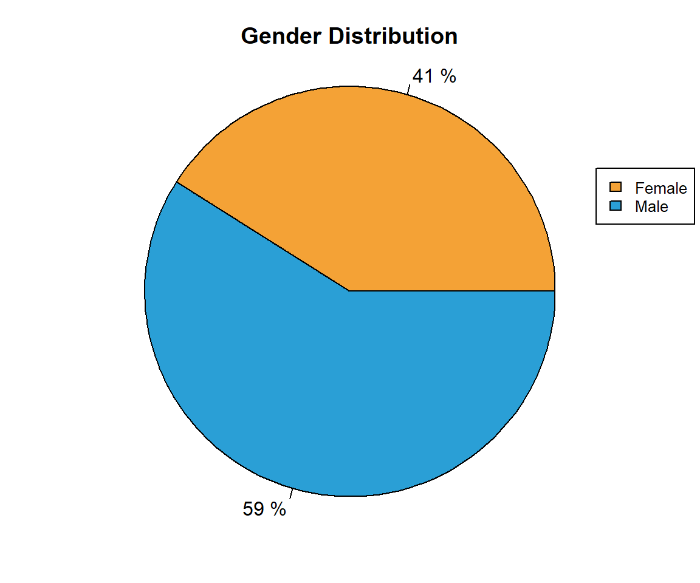
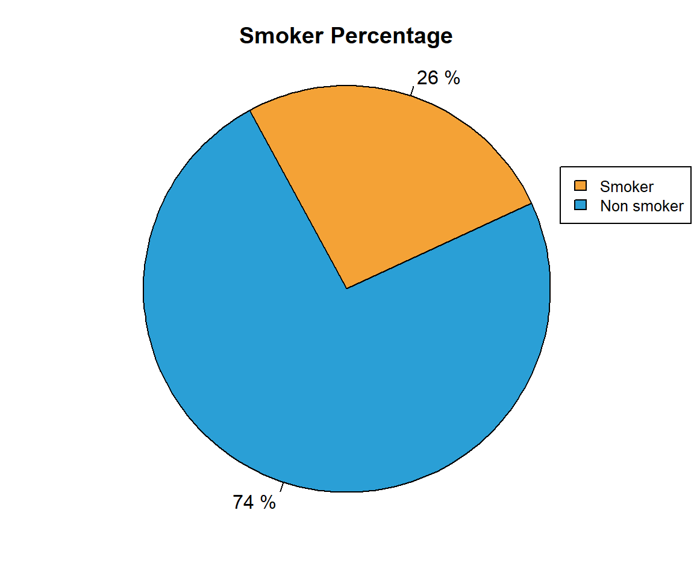
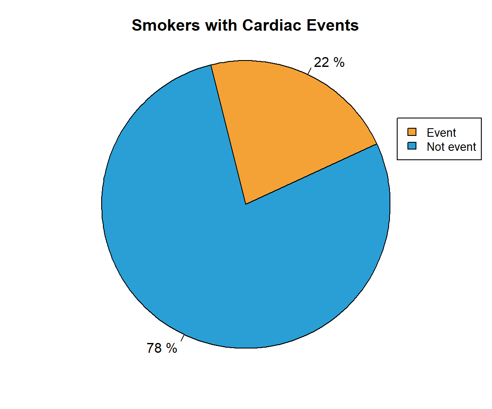
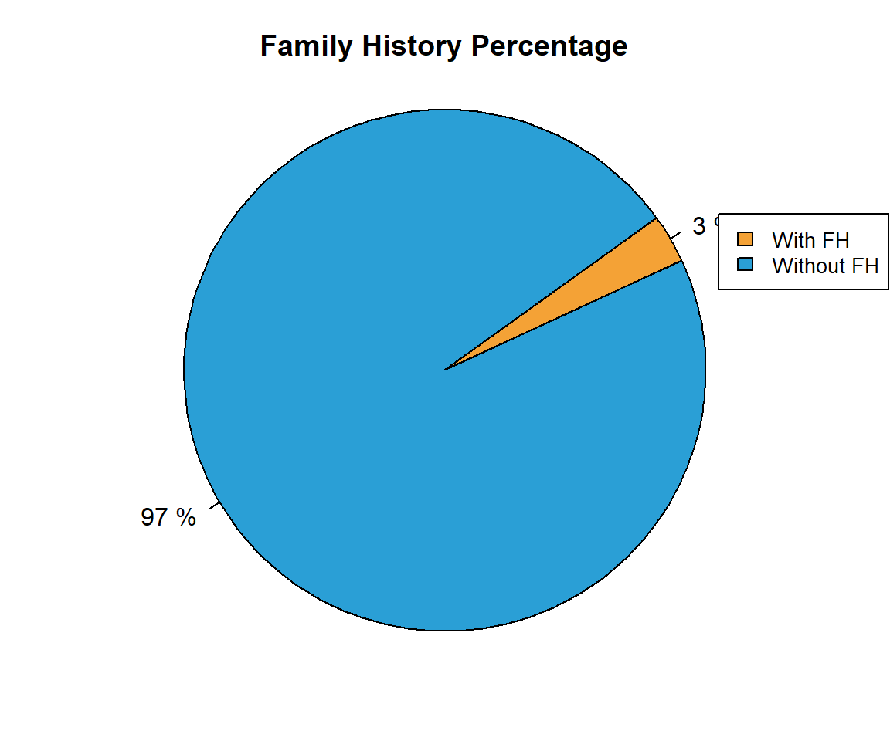

Study of factors that influence the ocurrence of cardiac events
Introduction
To optimally analyze the given dataset, we started by searching information and collecting research from universities, institutions and organizations with experience in cardiology. Then we proceeded to apply the knowledge acquired in analyzing the dataset and looking for possible combinations that bring new information to improve the prediction of cardiac events.
Data analysis
In this section, we analyze how different factors affect the probability of cardiac events by themselves.
Gender
The gender of patients in cardiac events is considered an important factor. According to an investigation led by the Norwegian University of Science and Technology, men have roughly twice the risk of cardiac events compared to women. As we can see on the charts, while gender distribution on the dataset is roughly even, 80% of patients which have had cardiac events are men.
Gender distribution


Diabetics
Diabetes is strongly related to heart diseases. Adults with diabetes are two to three times more likely to have a cardiovascular disease than people without diabetes even when glucose levels are under control. People with diabetes are more probable to have other conditions that contribute to the risk of developing cardiovascular disease (hypertension, high cholesterol and triglycerides or obesity). This supports the results in which 11% of the people in the dataset is diabetic, but 28% of people who suffered a cardiac event is diabetic. “Framingham Heart Study” by Christopher J. O’Donnell and Roberto Elosua
Diabetics distribution


Smoking
Smoking cigarettes is a major risk factor for heart disease according to an article by the National Heart, Lung and Blood Institute (U.S). Smoking increases the probability of plaque buildup inside coronary arteries, which may lead to clogs, blood clots, heart disease, heart failure or a heart attack.


Family history
If a patient has a family member who had a registered cardiac event, his risk of having one is even higher. According to an article written by the American Heart Association, family history is an eminent factor to foresee a possible cardiovascular event.


Associated symptoms

This graph shows relevant information, containing the distribution of patients who had a cardiac event and presented associated symptoms at the time of arrival on the hospital. As we can see, 54% of people who had a cardiac event presented associated symptoms, so this means that more than half of people that present associated symptoms are likely to suffer a cardiac event..
Events by age
Age distribution of cardiac events must be taken into account. Even though research shows that age by itself cannot lead to cardiac issues, it increases the risk of other symptoms, rising the probability of cardiac events.

Interpretation
In this section we look for match metadatas and found new data from them
Intersetion between patient with events

To further analyze which factors produce cardiac events, the intersection between the symptoms the patients presented must be analyzed to define a more accurate prediction.
Events by age and gender
While age and gender cannot cause a cardiac event by themselves, they affect how cardiovascular diseases develop on different sections of the population. As seen on the data analysis section, age increases the risk of other symptoms. Also, heart diseases behave differently on men and women: heart diseases develop later on women in relation to men, as we can see on the age mean, for men is 62 while for women is 65. The peak on women age distribution, could be attributed to a decline in the natural hormone estrogen in post-menopausal women, according to an article by American Health Organization
Graphic of female events
| Sex | AgeMean |
|---|---|
| Male | 62 |
| Female | 65 |
Quantity of event by duration
Events by duration

Events by duration and ubication

In the next graph we evaluate the different types pain suffered before the event. For each type of pain we see the ammount of events for different durations of said pain. From this graph we conclude that most of the events are often produced after an opressive type of pain. We can also see that duration of the pain is almost independent of the type, because all types share the same distribution of people with events by its time. Less than a minute is where less people suffers an event, while most people who suffers an event suffers it in more than 20 minutes.
Patients with more than one event
This graph shows the percentage of people that suffered from more than one event in relation to various factors. In order to maintain accuracy the people we took into account can only suffer from up to 2 of each factor, therefore reducing the amount of intersections between factors. (This doesn’t apply to the first bar which takes all factors into account).
According to the CDC (Centers for Disease Control), 805,000 people in the US have a heart attack in a year. Out of these, 25% have already had one before. Our data is in agreement in the sense that the amount of people that have another event is not low, however it reflects a much higher percentage than the CDC.
In these graphs we analyzed how many patients that suffered from a cardiac episode later suffered from another or more. The pie chart shows these percentages, and reflects that 57.9% of people who have an event later had another or more. The bar chart shows the percentages of patients that had an event and were obese, smokers or had family history, that also suffered from another event. In order to reduce inaccuracy, within each factor we only took into account people that fit within one or no other category, therefore reducing the intersection between categories to 1 or none. The barplot shows that individuals that smoke are likelier to suffer from another episode, followed by ones who are obese and ones with family history.
Predictor
In this section we look for predict an event
This graph shows the influence of every factor on the ocurrence of events, the darker the blue, the more influence it has on the ocurrence. Using the information aquired on the interpretation of factors, and various machine learning methods, we determined that the most important factors were:
- Edad: Age
- AHF: Family History
- TBQ: Smoking
- OBES: Obesity
- DLP: Lipids Alteration
- HTA: Arterial Hypertension
Generating predictor
This box plot is created from the logistic regression. With the information gathered in the graphic we are able to determinate which people are considered to be a possible cardiac event case when the test is done. This limit is set in a position where less false positives cases are issued at the same time that the accuracy is not lost. In our case we choose to work with the 0.17 value since its the value where we can se a clear division between the people that have events and the ones who do not.
Prediction Quality
| Real value 0 | Real value 1 | |
|---|---|---|
| Predict value 0 | 186 | 15 |
| Predict value 1 | 34 | 15 |